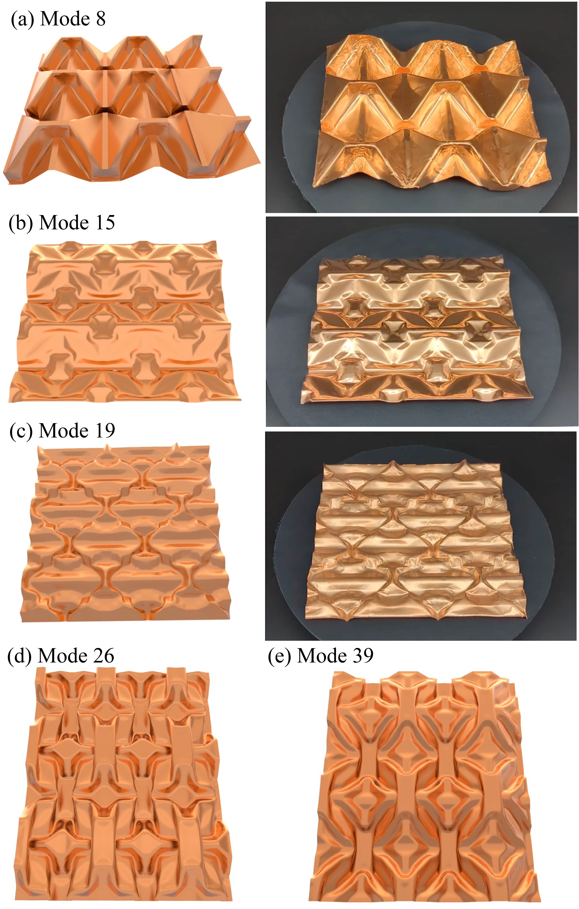
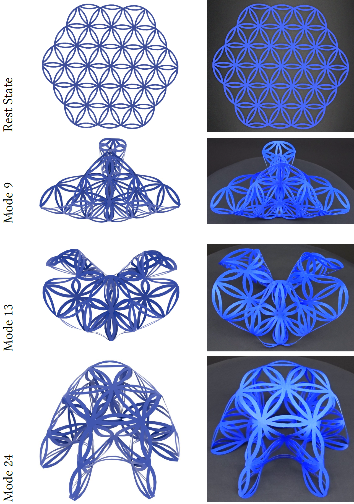

Modal Folding: Discovering Smooth Folding Patterns for Sheet Materials using Strain-Space Modes

Abstract
Folding can transform mundane objects such as napkins into stunning works of art. However, finding new folding transformations for sheet materials is a challenging problem that requires expertise and real-world experimentation. In this paper, we present Modal Folding---an automated approach for discovering energetically optimal folding transformations, i.e., large deformations that require little mechanical work. For small deformations, minimizing internal energy for fixed displacement magnitudes leads to the well-known elastic eigenmodes. While linear modes provide promising directions for bending, they cannot capture the rotational motion required for folding. To overcome this limitation, we introduce strain-space modes---nonlinear analogues of elastic eigenmodes that operate on per-element curvatures instead of vertices. Using strain-space modes to determine target curvatures for bending elements, we can generate complex nonlinear folding motions by simply minimizing the sheet's internal energy. Our modal folding approach offers a systematic and automated way to create complex designs. We demonstrate the effectiveness of our method with simulation results for a range of shapes and materials, and validate our designs with physical prototypes.Results

Fig. 2. Periodic folding patterns obtained using Modal Folding (a-e) with reflection boundary conditions and their corresponding physical prototypes (right) manufactured using copper sheets and 3D-printed press dies.

Fig. 6. Folding patterns for a thin sheet cut into the pattern of a life flower.